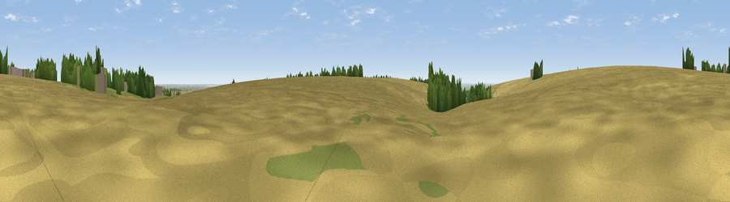

Viewpoint near Brantingham
#39070 in England · top 81% of its area beats it · near BrantinghamThe view, rendered

A 360° render of this exact spot computed from the terrain model, tree cover and land cover — summer colours, afternoon light, calibrated against photographs of famous viewpoints. Real trees, hedges and buildings will differ in detail.
The panorama
Grey silhouette: terrain skyline in each direction (720 bearings, Earth curvature and refraction included). Dashed green: skyline with trees (+15 m) and buildings (+8 m) as obstacles. Blue strip: how far the ground is visible on each bearing.
Where the view opens
Wedge length = distance to the farthest visible ground on that bearing (vegetation-aware). Rings at 10, 25 and 50 km.
What fills the view
84% cropland · 6% woodland · 6% grassland · 2% built-up ·
Angular shares of the visible panorama (visual magnitude), not map area. Landscape diversity 0.27 (0–1 Shannon).
Key numbers
More beautiful places nearby
The staircase of upgrades: each row has a higher view potential than everything closer. Driving times are estimates from straight-line distance, calibrated against real road routing — check an actual route before setting out.
| Place | Direction | Drive | Score |
|---|---|---|---|
| Viewpoint near Brantingham | NNW · 0 km | ~2 min | 42.0 |
| Viewpoint near Brantingham | S · 1 km | ~2 min | 44.5 |
| Viewpoint near Brantingham | SSE · 2 km | ~5 min | 45.1 |
| Viewpoint near South Cave | WNW · 3 km | ~6 min | 60.9 |
| Viewpoint near South Newbald | NW · 4 km | ~9 min | 62.3 |
| Viewpoint near South Newbald | NW · 4 km | ~9 min | 64.9 |
| Viewpoint near Nunburnholme | NNW · 18 km | ~31 min | 68.5 |
| Viewpoint near Millington | NNW · 26 km | ~42 min | 69.7 |
53.77288, -0.55162 · source: osm peak · position refined by local search. Computed location — check access rights before visiting.